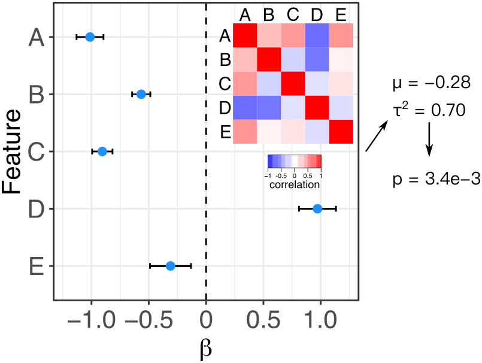

Meta-analysis is widely used to summarize estimated effects sizes across multiple statistical tests. Standard fixed and random effect meta-analysis methods assume that the estimated of the effect sizes are statistically independent. Here we relax this assumption and enable meta-analysis when the correlation matrix between effect size estimates is known. Fixed effect meta-analysis uses the method of Lin and Sullivan (2009), and random effects meta-analysis uses the method of Han, et al. 2016.